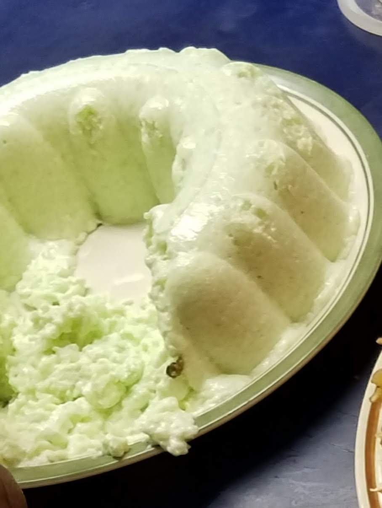

Pear Salad aka "The Green Stuff"

A Lime, Pear, and Pecan congealed salad.
Pear salad, lime congealed salad, the green stuff - it goes by many names! I've been eating this as long as I've been alive at every Thanksgiving and Christmas meal. The full plate was empty every night before we went to bed. At some point, most of us outgrew our love for Pear Salad... but not I! My kids don't much like it, but my mom and nephew and BFF do. I'm still going to make it at least twice each year. OH - And I don't add the nuts. But, you do you!
Ingredients:
- 1 pkg. (3 oz) lime jello
- 1 c boiling (hot from the microwave) pear juice (or water added to make the cup)
- 1 can (1lb 14oz) pear slices, drained (see above)
- 1/2 lb cream cheese, softened
- 1 pkg (2 oz) dessert topping mix (Dream Whip NOT COOL WHIP!)
- (optional) 1/2 c chopped nuts
Steps:
- Dissolve gelatin powder in water/juice mix.
- Add pear slices and cream cheese to gelatin.
- Beat until smooth. (This is messy - use a big bowl!)
- Prepare topping mix according to box instructions.
- Fold together topping, pear mixture, and nuts.
- Spoon into 2 1/2 quart mold. Chill until set.